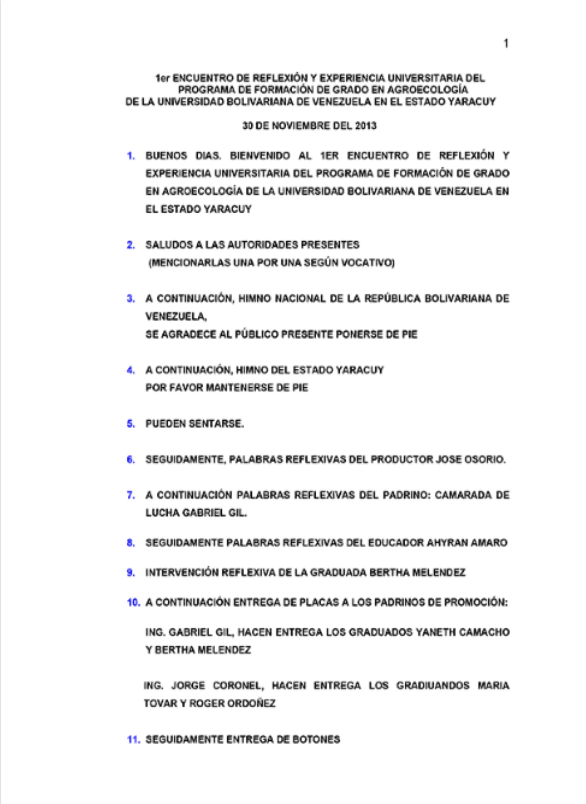
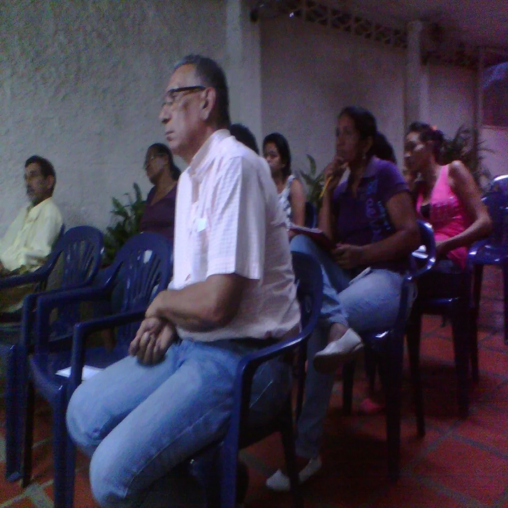
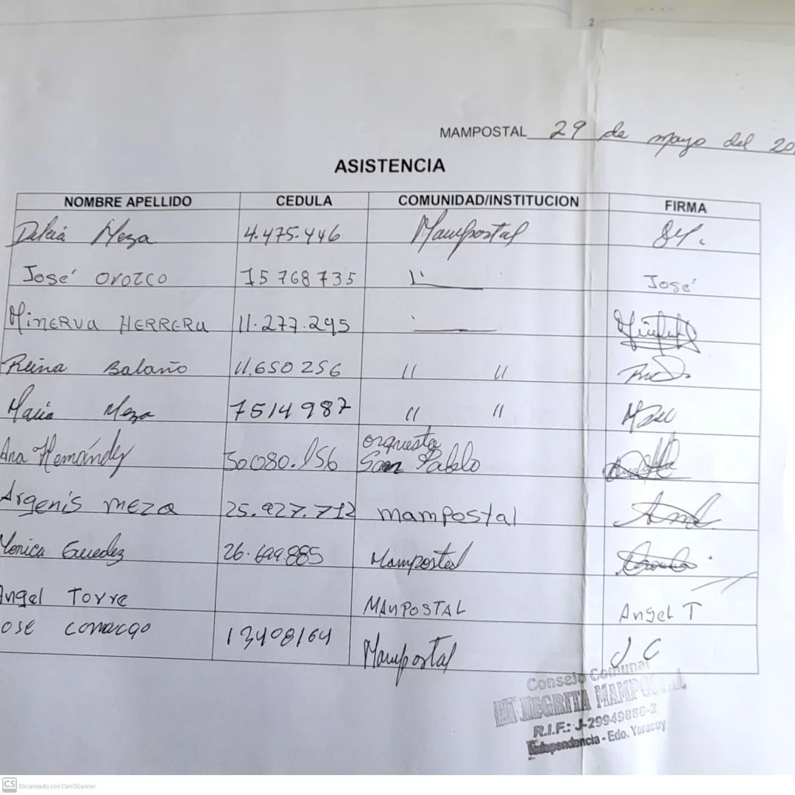
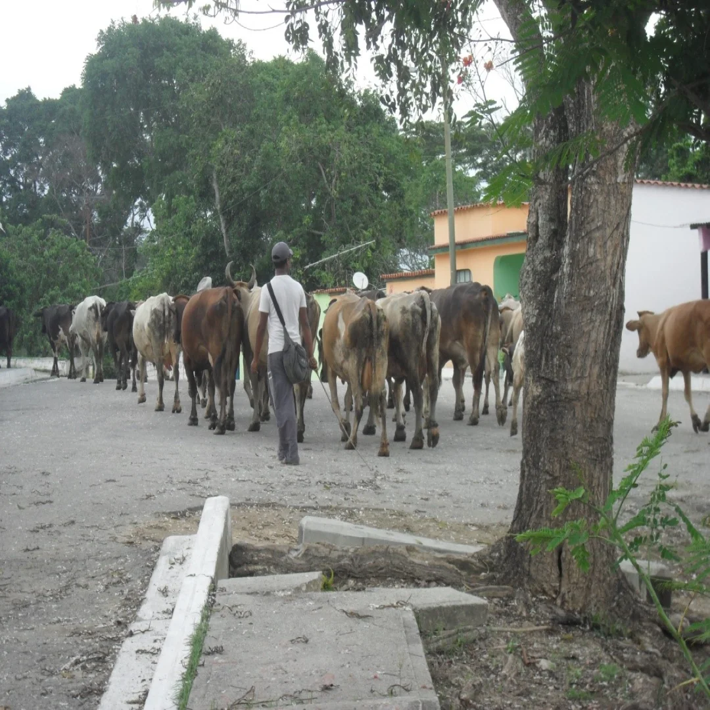
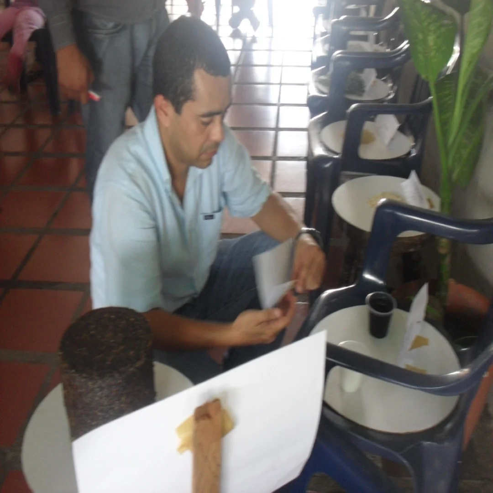

UNIVERSIDAD NACIONAL EXPERIMENTAL SIMÓN RODRÍGUEZ
AUTOBIOGRAFÍA
LICENCIADO JOSE ANTONIO RODRIGUEZ PEREZ.
C.I: 10.368.723
Egresado de la Universidad Bolivariana de Venezuela (U.B.V.) Eje Geopolítico Regional Precursor José Leonardo Chirinos- Estado Yaracuy. Perteneciente al PFG Agroecología. Escuela de Agroecología Punto Fijo Estado- Falcón.
Como profesional TSU en FONDAS Yaracuy, participe en el Taller de Crecimiento Personal en Armonía con la Naturaleza, impartido por la Asociación Protectora a la Vida (Asopro Vida). Inscrita en el Ministerio del Interior y Justicia, y auspiciado por FONDAS y UBV.
Por medio de la Universidad Bolivariana de Venezuela y la Fundación Misión Sucre del Estado Yaracuy, asistí a la Charla Cambio Climático y Agroecología. Impartida por la Universidad de Pinar del Rio República de Cuba. Misión Sucre Yaracuy y UBV Yaracuy.
Por otra parte hice estudios en el Taller de Inducción de Alimentos Balanceados para Animales y Levante de Aves Ponedoras para la Producción de Huevos. Dictado por la Unidad de Producción Familiar (UPF) Agro Alimentos Giménez.
Asistí al curso de Elaboración de Harinas Alternativas a Partir de Cereales, Leguminosas, Musáceas (cambur y plátano verde), Raíces y Tubérculos, para Consumo Humano y Animal.Certificado por la Fundación Centro de Investigaciones del Estado Para la Producción Experimental Agroindustrial (CIEPE). Donde fui certificado.
Fui capacitado en el Taller Instrucción para la Elaboración de Proyectos de Investigación en Ciencia e Innovación, dictado por el personal adscrito al FONACIT del Ministerio del Poder Popular para la Ciencia y Tecnología. UNELLEZ Barinas.
Todo lo anterior mente expuesto sirvió como base fundamental para incentivarme en la puesta en práctica y la realizacion del Proyecto (Tesis de Grado) identificada como “ Elaboración de Bloques Minerales con Fines de Alimentación Animal en la Comunidad de Mampostal, Municipio Independencia Estado Yaracuy”. Como pre requisito para obtener el título de: Licenciado en Agroecología.
Actualmente laboro en el Fondo para el Desarrollo Agrario Socialista (FONDAS) con fecha de ingreso de: 01 de Octubre de 2008, como: Apoyo administrativo (Asistente Financiero), en la sede FONDAS YARACUY.
Siendo servidor público en FONDAS Yaracuy, ejerzo funciones en el área de financiamiento en las siguientes actividades: Análisis de solicitud de financiamiento, Asistencia de solicitud financiera, Organización de colectivos para la solicitud de financiamiento; Y a su vez desempeño las siguientes tareas dentro del área: Revisión de documentación administrativa, Orientación sobre documentación oficial de las cooperativas, consejos comunales, fundos zamoranos, fundos rescatados y empresas de producción social, Orientación sobre tramitación de documentos de tenencia de la tierra, Orientación para solicitud de documentos de organización colectiva, Orientación administrativa para la tramitación jurídica de documentos necesarios para el financiamiento.
En aras de ampliar mis conocimientos en el ejercicio de mis funciones en FONDAS, fui capacitado en diferentes áreas del conocimiento en Jornadas referidas a: Fortalecimiento del Poder Popular, organizadas por la Unidad de atención al Ciudadano de la Contraloría del estado Yaracuy con el objeto de fortalecer el ámbito administrativo de los consejos comunales, cooperativas y empresas de producción social. En cuanto a: Organización, Estructura y Funcionamiento de las Oficinas de Atención al Ciudadano, fui entrenado para: Declaración Jurada de Patrimonio. Orientaciones Administrativas para los consejos Comunales y demás colectivos, Registros Contables de los Consejos Comunales, Contraloría Social a los Consejos Comunales, Rendición de Cuentas a los Consejos Comunales, Ley de Contrataciones Públicas a los Consejos Comunales.
En otro orden de ideas dentro del ejercicio de mis funciones laborales en FONDAS Yaracuy, y dado el momento histórico, como fue el nacimiento de la Empresa Socialista Agropatria. Y en el Cumplimiento con el Deber y Ser del trabajador, en Agropatria Sabana de Parra y Agropatria San Felipe. Dado lo anterior mente expuesto, se me confirió Reconocimiento por mi valiosa contribución en la transformación, crecimiento y desarrollo de los programas de abastecimiento y distribución de insumos agrícolas.
Dada la celebración del quinto aniversario de FONDAS se hace merito a mi destacada labor en favor al desarrollo agrario nacional impulsado por la Gran Misión Agrovenezuela, en tal sentido se me otorgo un Diploma de Reconocimiento.
En ocasión de conmemorarse el segundo aniversario de la desaparición física del comandante eterno Presidente Hugo Chávez Frias. La coordinación Regional de FONDAS Yaracuy, auspicio un video foro para exaltar la obra y memoria del presidente Hugo Chávez Frias, en la cual se me otorgo diploma de asistencia. En mayo del 2015.
Como miembro del Equipo del Área de Financiamiento de FONDAS YARACUY. Por haber cumplido las metas trazadas durante el proceso de carga de financiamientos de cereales 2015. La Coordinación Regional de FONDAS hizo reconocimiento colectivo a todos los integrantes del área de la cual formo parte.
Dado el cumplimiento laboral en FONDAS Yaracuy, por el periodo de catorce años ininterrumpidos al servicio y desarrollo de la soberanía agroalimentaria. Se me confirió diploma de reconocimiento.
En cuanto al aspecto de socialización Organice el 1er Encuentro de Reflexión y Experiencias Universitaria del PFG en Agroecología UBV Yaracuy, Museo Carmelo Fernández, San Felipe Estado Yaracuy.
Realice en la comunidad de Mampostal el Taller sobre Elaboración de Bloques Minerales con fines de Alimentación Animal. Contando con la participación del Consejo Comunal y los Productores de la zona, donde su contenido incluía los métodos para su elaboración, materiales proteicos de energía y minerales presentes en la zona y la importancia del bloque en la alimentación de los bovinos en época seca.
Dado la gran receptividad del Taller sobre Elaboración de Bloques Minerales con fines de Alimentación Animal por parte de los Productores de Mampostal Municipio Independencia del Estado Yaracuy, así como también los habitantes de la comunidad y el Consejo Comunal de La Negrita Mampostal. Se realizó, La 1ra Vitrina. Experiencia Agroecológica en la Elaboración de Bloques Minerales con Fines de Alimentación Animal, donde se sostuvo un intercambio de saberes con cada uno de los participantes.
Ponente del proyecto UBV, “Elaboración de Bloques Minerales” y agente de discusión critica en las mesas de trabajo. En el 1er Encuentro Regional del Programa de Formación en Agroecología Eje Geopolítico José. L. Chirino. En el Fundo Zamorano Aracal Municipio Urachiche Estado Yaracuy.
En el mismo orden de ideas organice el “1er Encuentro Presentación de Proyectos Socioproductivos”, a las Diferentes Instituciones del Estado del PFG de Agroecología de la UBV. En el Estado Yaracuy. En dicho encuentro se presentaron los Proyectos; Elaboración de Bloques Minerales con Fines de Alimentación Animal en la Comunidad de Mampostal, Municipio Independencia Estado Yaracuy. Establecimiento de Patios Productivos en el Sector La Mata, Municipio Arístides Bastidas Estado Yaracuy. Y Reforestación Productiva Agroecológica en la Quebrada Las Maporas. Sector La Gotera. Municipio Arístides Bastidas Estado Yaracuy.
Así mismo participe en Calidad de Coautor de Ponencia Cartel, con la Propuesta de Organización Socioproductiva para la Alimentación Animal en la Comunidad de Mampostal Municipio Independencia, Yaracuy Venezuela. En el Segundo Congreso Venezolano de Ciencia, Tecnología e Innovación. Caracas 2013.
Finalmente obtuve la Aceptación del Comité Académico del I Congreso Venezolano de Agroecología. Con el trabajo titulado “Elaboración de Bloques Minerales con Fines de Alimentación Animal en la Comunidad de Mampostal Municipio Independencia Estado Yaracuy Venezuela”. Para ser socializado en el I Congreso Venezolano de Agroecología 2014, realizado en la sede de la Universidad Bolivariana de Venezuela, Punto Fijo del Estado Falcón.
La vida no es la que uno vivió, Sino la que uno recuerda y como La recuerda para contarla. Gabriel García Márquez.
PORTAFOLIO
Título Licenciado en Agroecología.
Certificación de Calificaciones.
Taller AsoproVida.
Charla Cambio Climático y Agroecología.
Taller de Introducción de Alimentos Balanceados para Animales UPF AGROALIMENTOS GIMENEZ.
Certificado Fundación CIEPE.
Constancia Taller FONACIT UNELLES Barinas.
Constancia de Trabajo FONDAS 2023.
Constancia de Cargo y Funciones FONDAS 2023.
1era Jornada CONTRALORÍA Estado Yaracuy.
2da Jornada CONTRALORÍA Estado Yaracuy.
Reconocimiento AGROPATRIA.
Reconocimiento 5to Aniversario FONDAS.
Diploma Asistencia VIDEOFORO.
Reconocimiento al Equipo de Financiamiento FONDAS.
Ceremonial 1er Encuentro de Reflexión y Experiencia Universitaria del PFG de la UBV Estado Yaracuy.
Invitación al 1er Encuentro de Reflexión y Experiencia Universitaria del PFG de la UBV Estado Yaracuy.
Taller Elaboración de Bloques Minerales con Fines de Alimentación Animal
Acta del Taller
Asistencia del Taller

1 era VITRINA Experiencia Agroecológica en la Elaboración de Bloques Minerales con Fines de Alimentación Animal en la comunidad de Mampostal, Municipio Independencia Estado Yaracuy.
Acta de la Vitrina
Asistencia de la Vitrina 1
Asistencia de la Vitrina 2
Díptico de la Vitrina




1er Encuentro Regional del PFG Agroecología Eje Geopolítico José L Chirino.
Afiche del Encuentro
Constancia de Asistencia al Encuentro.

1er Encuentro Presentación de Proyectos Socio productivos, a las Diferentes Instituciones del Estado del PFG en Agroecología UBV Estado Yaracuy.
Acta del Encuentro.
Asistencia al Encuentro.
Tríptico del Encuentro.
Certificado 2do Congreso Venezolano de Ciencia y Tecnología.
Constancia de Aceptación 1er Congreso Venezolano de Agroecología.
Resumen de Participación al 1er Congreso Venezolano de Agroecología.